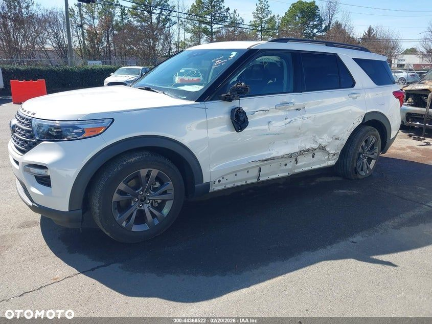
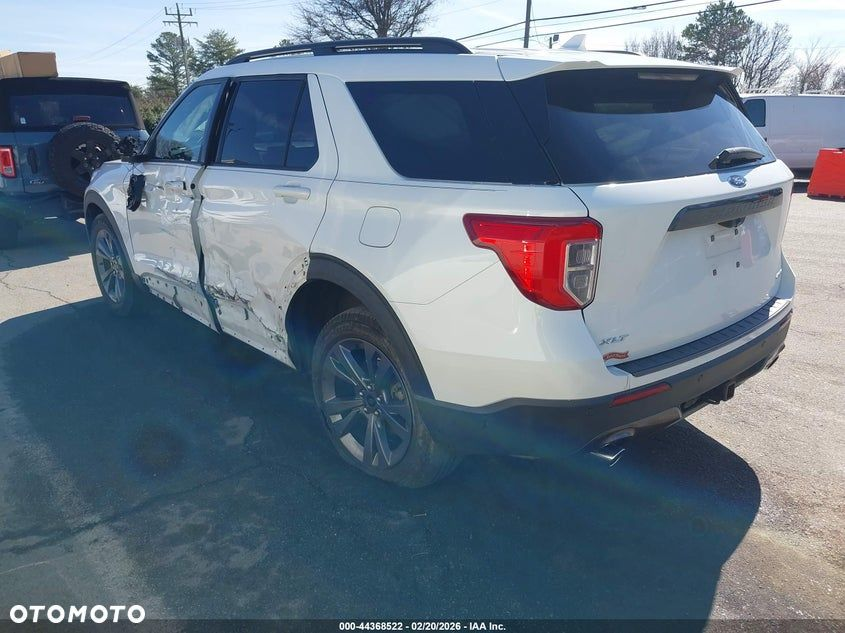
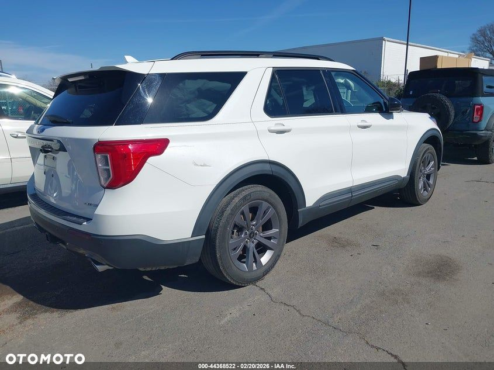
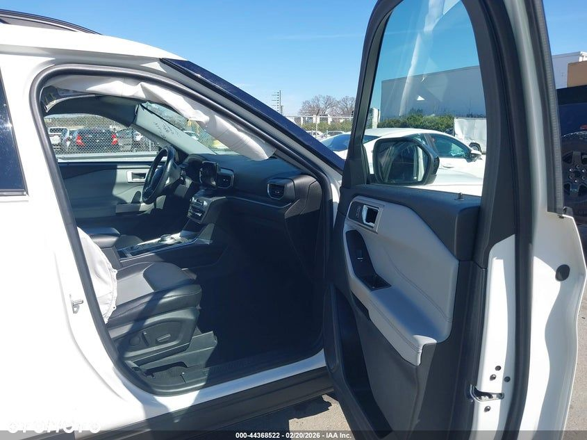
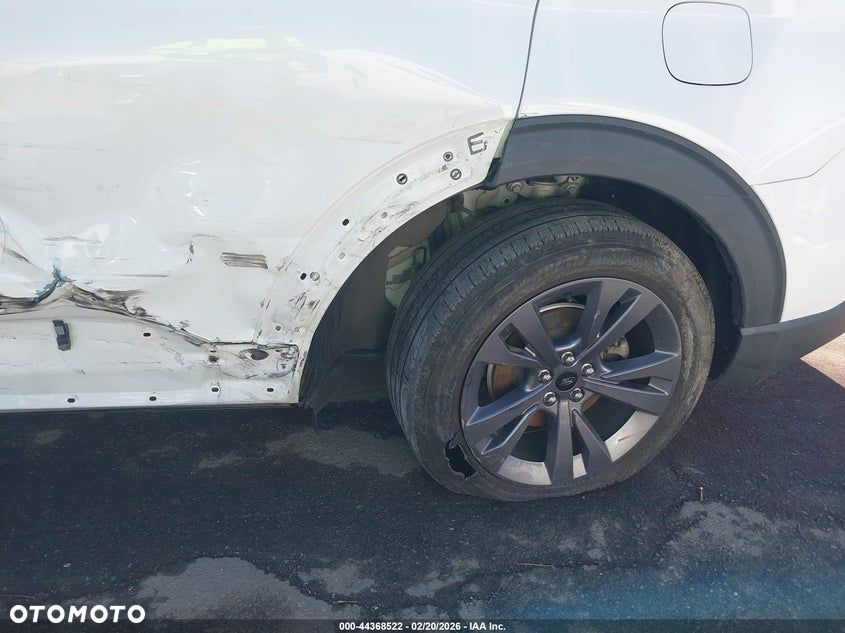
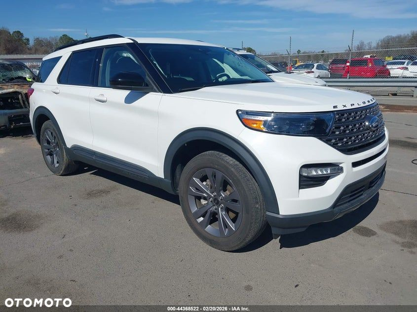
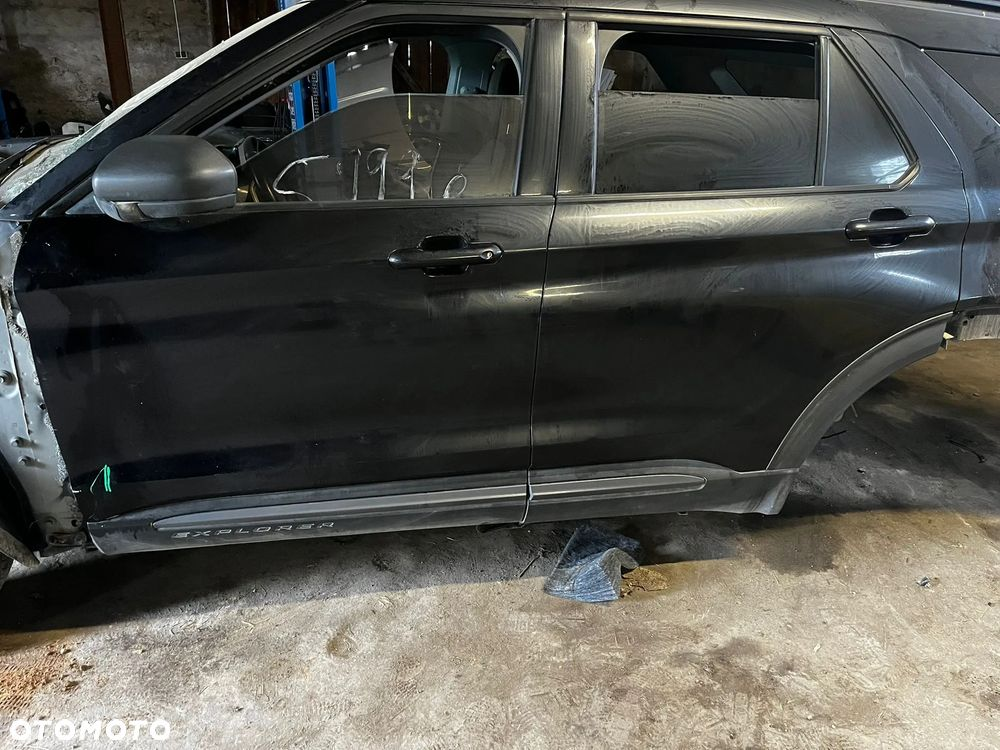
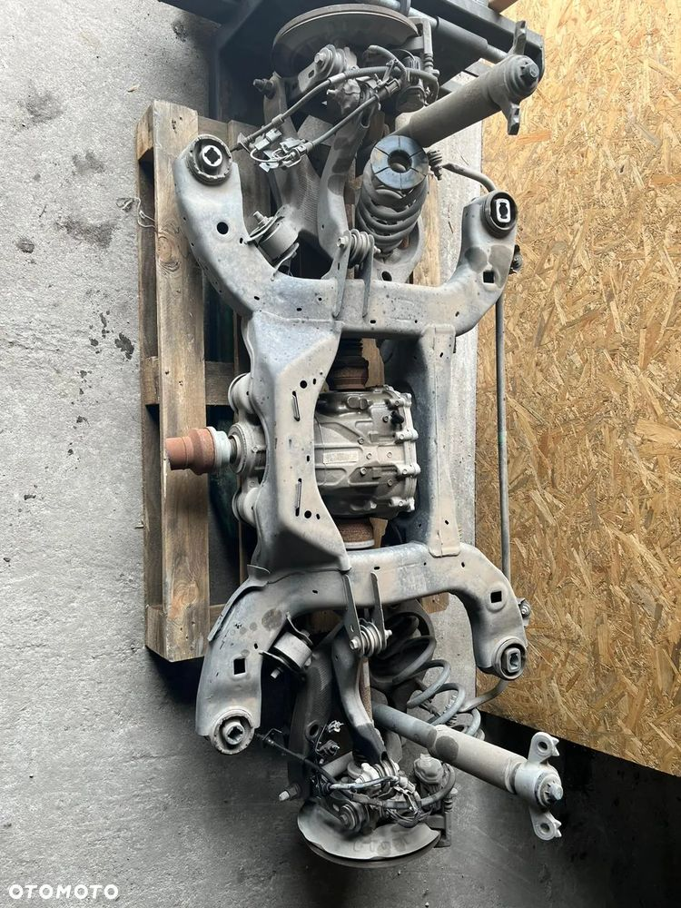
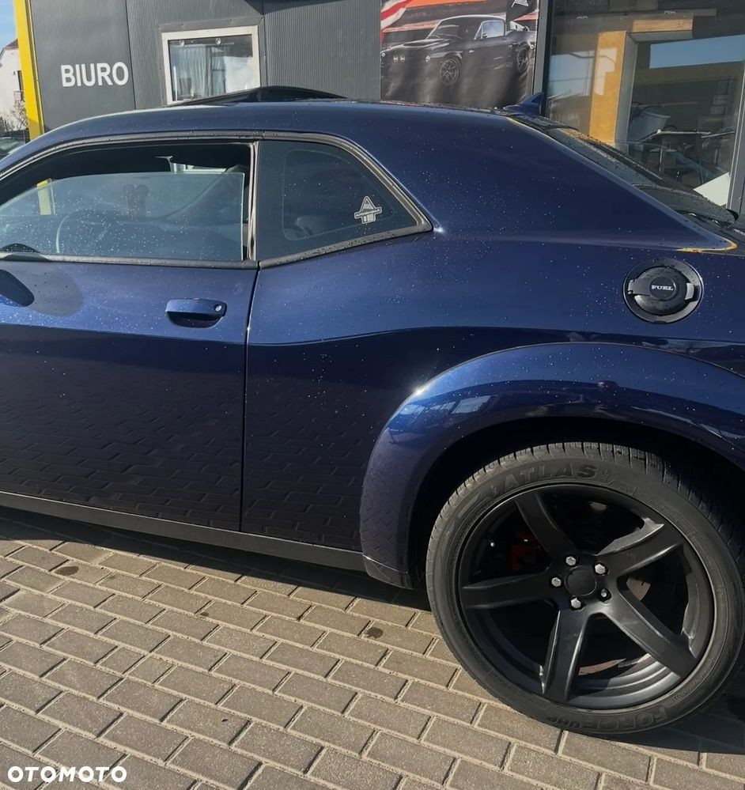
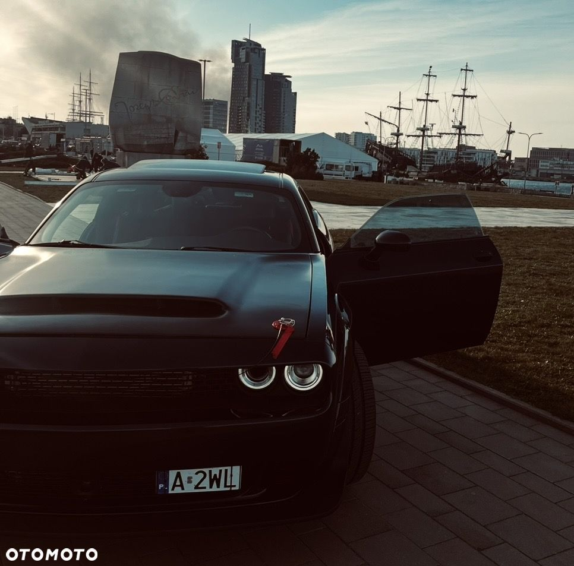

Oferuję Forda Explorer 2022, import z USA, wersja Ecoboost 300 km . NIE JEST TO HYBRYDA - NIESTETY NIE DA SIE ZAZNACZYC SILNIKA 2.3 - Auto z napędem 4x4 (AWD), automatyczna skrzynia biegów, przebieg 62 tys. km.
SPROWADZAMY POJAZDY Z CZESCIAMI DO NAPRAWY ORAZ JAKO JEDYNI W POLSCE Z GWARANCJA NA SILNIK JUZ W CHWILI ZAKUPU !!! Cena przy zakupie wraz z oplatami importowymi.
TWOJ IMPORTER GDYNIA - TRÓJMIASTO
Wyposażenie m.in.:
- Kamera 360
- System nagłośnienia
- Skórzana tapicerka
- Szyberdach elektryczny
- Podgrzewane i wentylowane fotele przód, podgrzewane tylne
- Fotele elektryczne z pamięcią i masażem
- Trzystrefowa klimatyzacja automatyczna
- Asystent pasa ruchu, martwe pole, rozpoznawanie znaków
- Adaptacyjny tempomat
- Systemy bezpieczeństwa: ABS, ESP, asystent hamowania, wykrywanie pieszych
- Reflektory LED, światła do jazdy dziennej LED
- Czujniki parkowania, asystent parkowania
- Bezkluczykowy dostęp, ładowarka indukcyjna
- Android Auto, Bluetooth, nawigacja, dotykowy ekran
- Elektrycznie składane i podgrzewane lusterka
- 20" alufelgi
- Przyciemniane szyby tylne
Auto uszkodzone – posiadamy czesci szczegóły do ustalenia. Możliwość organizacji naprawy .
Zapraszam
Wszystkie informacje TELEFONICZNIE, gdy nie odbieramy prosze o sms : "explorer " a oddzownimy.









